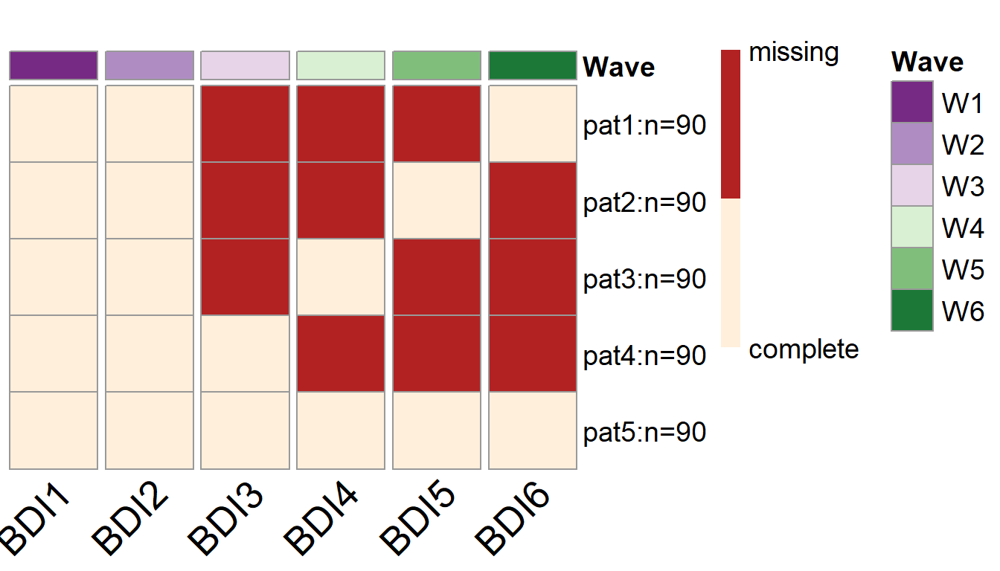

Wave-Level-PHPM.RmdIn this vignette we will introduce the wave-level PHPM designs. As the name suggests, in wave-level PHPM designs, the missingness is imposed at the wave level. In those designs, participants are assigned to miss one or more waves of future data collection. If a participant is assigned to miss a specific wave of data collection, the researcher will not collect any data from this participant in that wave.
Wave-level PHPM designs are relatively easy to implement. But there is usually a very limited number of plausible wave-level missing designs, and thus sometimes the search among wave-level PHPM designs may not yield a satisfactory result in terms of statistical power.
To search for wave-level PHPM designs using simPM, we only need to specify the methods = "wave" argument when using the simPM() function.
In this hypothetical example, a researcher (Dr. X) is interested in studying the longitudinal growth of adolescents’ depressive symptoms. Dr. X has proposed a longitudinal study that is expected to extend over 3 years. Participants are to be assessed with Beck’s Depression Inventory (BDI) every six months. Participants also report their social support at the first wave of data collection. The data will be analyzed using a conditional linear LGM, as seen in the following diagram. The main goal of the study is to examine the impact of social support on the growth trajectory of depressive symptoms. Additionally, the researcher is interested in the relation between the intercept and slope after controlling for social support. The model parameters of focal interest include the path coefficients predicting the latent intercept and latent slope from social support, as well as the residual covariance between the latent intercept and slope.
Although the researcher has initially obtained an external funding to support his longitudinal study, unfortunately, after the first two waves of data collection, the funding agency announces a 30% reduction in the remaining funding. Mr. X wishes to continue the project but he has to deal with the lowered budget constraint. Of course, Mr. Y also wants to keep the scientific rigor and satisfactory statistical power. She thus chooses to use simPM to find a design that yields sufficient power but costs no more than the reduced budget.
A conditional linear LGM
After supplying the population model and the analysis model, we can use the function simPM() to search for an optimal wave-level missing design with the methods = "wave" argument. For more details about the specification of other arguments, please refer to this vignette.
popModel <- '
sprt ~~ 1*sprt
sprt ~ 0*1
i =~ 1*BDI1 + 1*BDI2 + 1*BDI3 + 1*BDI4 + 1*BDI5 + 1*BDI6
s =~ 0*BDI1 + 1*BDI2 + 2*BDI3 + 3*BDI4 + 4*BDI5 + 5*BDI6
BDI1~0*1
BDI2~0*1
BDI3~0*1
BDI4~0*1
BDI5~0*1
BDI6~0*1
BDI1~~0.3*BDI1
BDI2~~0.3*BDI2
BDI3~~0.3*BDI3
BDI4~~0.3*BDI4
BDI5~~0.3*BDI5
BDI6~~0.3*BDI6
i ~ -1.5*sprt
s ~ -0.2*sprt
i ~ 26*1
s ~ -1*1
i ~~ 6*i+ (-0.9)*s
s ~~ 2*s
'analyzeModel <- '
sprt ~~ sprt
sprt ~ 1
i =~ 1*BDI1 + 1*BDI2 + 1*BDI3 + 1*BDI4 + 1*BDI5 + 1*BDI6
s =~ 0*BDI1 + 1*BDI2 + 2*BDI3 + 3*BDI4 + 4*BDI5 + 5*BDI6
BDI1~0*1
BDI2~0*1
BDI3~0*1
BDI4~0*1
BDI5~0*1
BDI6~0*1
BDI1~~BDI1
BDI2~~BDI2
BDI3~~BDI3
BDI4~~BDI4
BDI5~~BDI5
BDI6~~BDI6
i ~ sprt
s ~ sprt
i ~ 1
s ~ 1
i ~~ i + s
s ~~ s
'wave.lgm <- simPM::simPM(popModel = popModel,
analyzeModel = analyzeModel,
VarNAMES = paste0("BDI",1:6),
Time = 6,
Time.complete = 2,
k = 1,
pc = 0.2,
pd = 0,
costmx = c(10,10,15,15),
n = 450,
nreps = 1000,
focal.param = c("i~sprt","s~sprt","i~~s"),
complete.wave = NULL,
eval.budget = T,
rm.budget = 50*450*0.7,
seed = 12345,
distal.var = "sprt",
engine = "l",
methods = "wave")By running the code above, simPM will map out the possible wave-level PHPM designs and determine whether the cost of each design is within the remaining budget limit. It will run Monte Carlo simulations for the plausible designs that cost less than the remaining amount of funding. Comparisons are made among the plausible designs. The design that yields higher empirical statistical power with regard to the focal parameters will be selected as the optimal wave-level PHPM design.
In this example, there are two plausible wave-level PHPM designs, given we have specified that 20% of the participants will provide complete data over the following waves of data collection.
From the output, we can see that 90 participants are assigned to provide complete data over the future waves of data collection, while the rest of the participants are assigned to one of the four missing data patterns. More specifically, ninety participants are randomly picked to NOT provide data in wave 3, wave 4, and wave 5 (the first row of the plot); another 90 participants are randomly picked to NOT provide data in wave 3, wave 4, and wave 6 (the second row of the plot).
This design yields satisfactory statistical power for testing all three focal parameters (i~sprt,s~sprt,i~~s).
summary(wave.lgm)
#> [1] "=================results summary================"
#> convergence.rate weakest.param.name weakest.para.power cost.design
#> 1 1.000 s~sprt 0.828 13650
#> 2 0.999 s~sprt 0.862 9000
#> miss.waves
#> 1 2
#> 2 3
#> [1] "=================Optimal design================="
#> convergence.rate weakest.param.name weakest.para.power cost.design
#> 2 0.999 s~sprt 0.862 9000
#> miss.waves
#> 2 3
#> [1] "=================Optimal design for focal parameters================="
#> Estimate Average Estimate SD Average SE Power (Not equal 0)
#> i~sprt -1.5001637 0.11853266 0.11738935 1.000
#> s~sprt -0.2015112 0.06651828 0.06750681 0.862
#> i~~s -0.8928260 0.18286992 0.17397815 0.999
#> Std Est Std Est SD Std Ave SE Average Param Average Bias
#> i~sprt -0.5217401 0.03515221 0.03482613 -1.5 -0.0001637438
#> s~sprt -0.1411624 0.04615719 0.04674602 -0.2 -0.0015111960
#> i~~s -0.2585775 0.04777923 0.04514329 -0.9 0.0071740326
#> Coverage Average FMI1 SD FMI1
#> i~sprt 0.950 0.007683133 0.002622483
#> s~sprt 0.956 0.019456644 0.003455831
#> i~~s 0.937 0.034027477 0.006533191
#> [1] "=================Optimal patterns==============="
#> BDI1 BDI2 BDI3 BDI4 BDI5 BDI6
#> 0 0 1 1 1 0
#> 0 0 1 1 0 1
#> 0 0 1 0 1 1
#> 0 0 0 1 1 1
#> completers 0 0 0 0 0 0
#> [1] "=================Optimal probs=================="
#> [1] 0.2 0.2 0.2 0.2 0.2
#> [1] "=================Optimal ns===================="
#> [1] 90 90 90 90 90